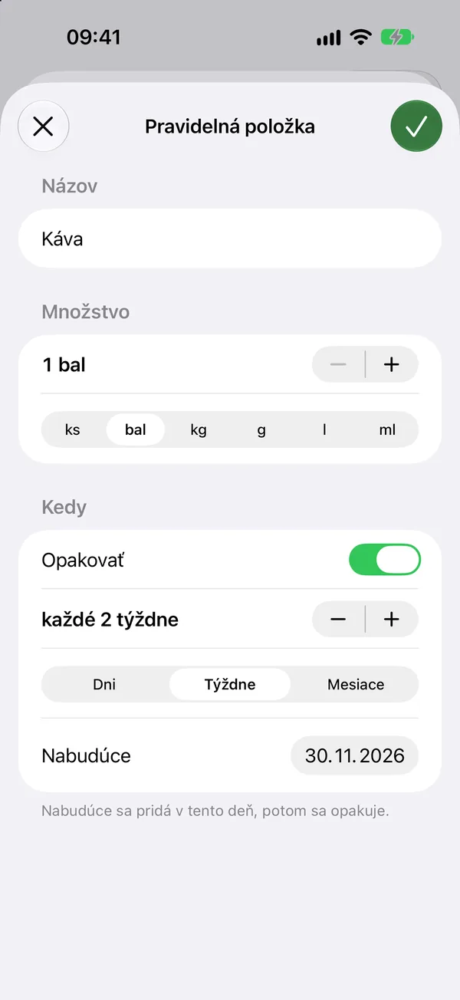

Ako nastaviť pravidelné nákupy
-
Krok 1 Otvorte pravidelné položky
V karte Zoznam ťuknite vpravo hore na ⋯ a vyberte Pravidelné položky. Alebo podržte položku v zozname a zvoľte Pridávať pravidelne.

-
Krok 2 Nastavte, ako často
Ťuknite na + (Pridať pravidelnú položku), zadajte položku, zapnite Opakovať a nastavte napríklad každé 2 týždne (Dni / Týždne / Mesiace). V riadku Nabudúce vidíte, kedy sa pridá.

-
Krok 3 Shoppie ju pridá sám
V zvolený deň sa položka objaví v nákupnom zozname. Pozastaviť ju môžete potiahnutím doprava.
Časté otázky
Pridajú sa pravidelné položky aj rodine?
Áno. Pravidelné položky sa zdieľajú s domácnosťou, takže sa objavia v zozname všetkým členom.
Dá sa funkcia vypnúť?
Áno, v Nastavenia → Funkcie → Pravidelné položky.
Ďalšie otázky nájdete na stránke Podpora.